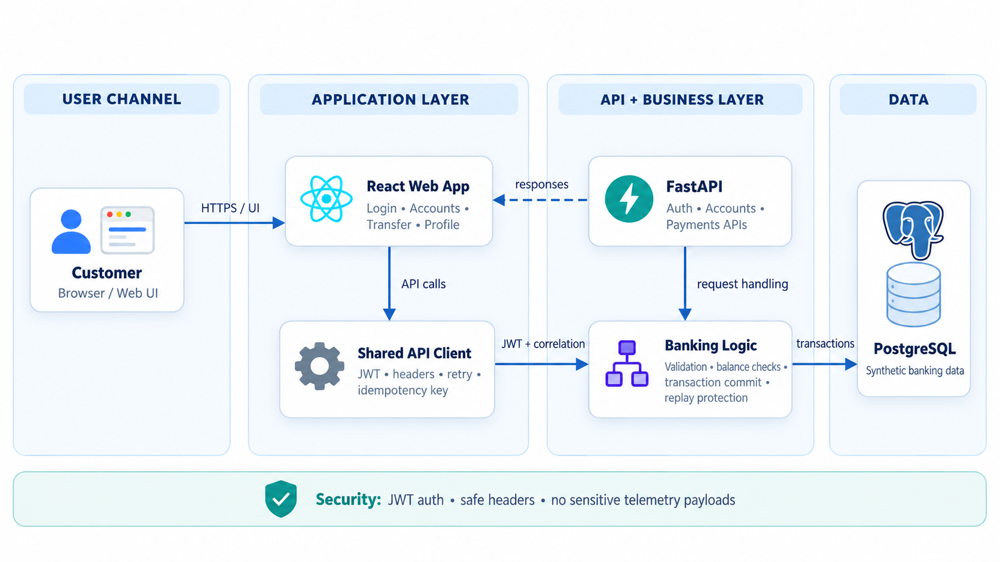
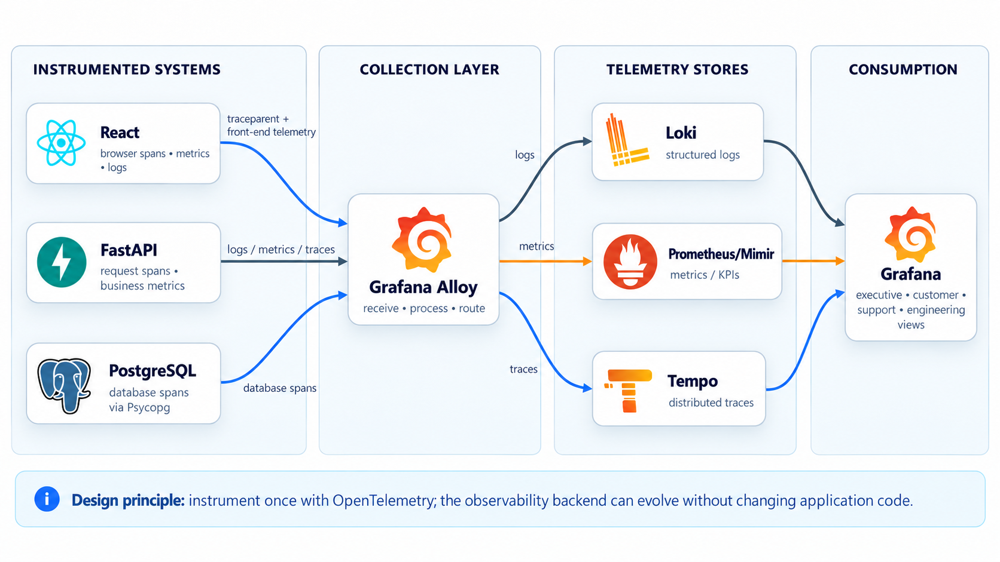
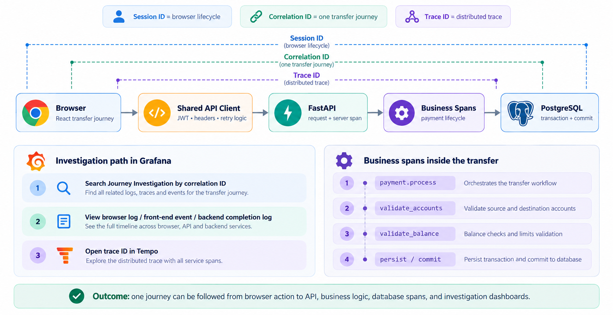
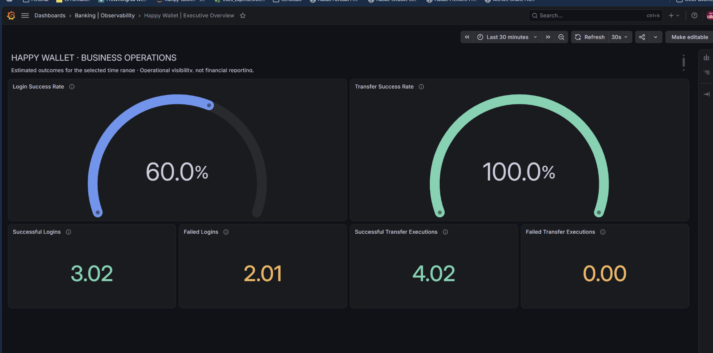
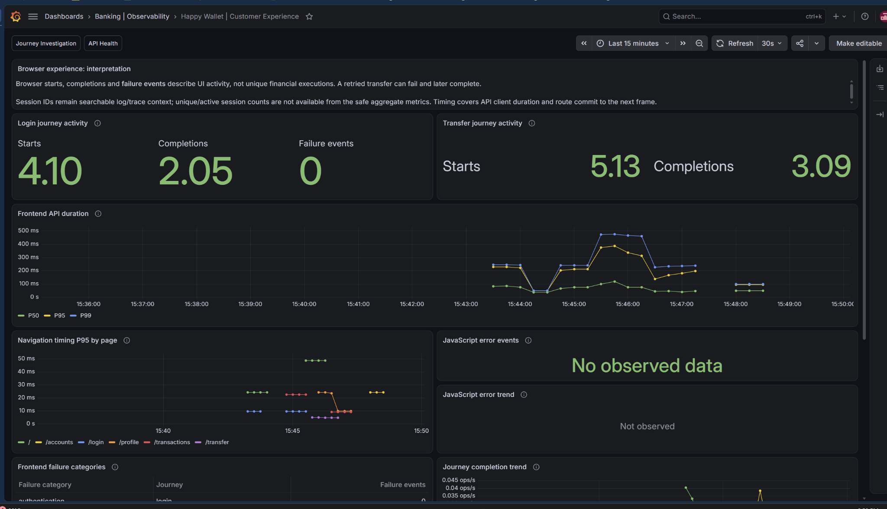
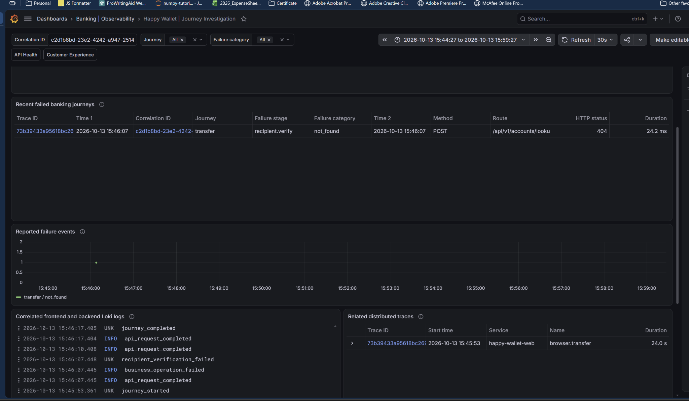
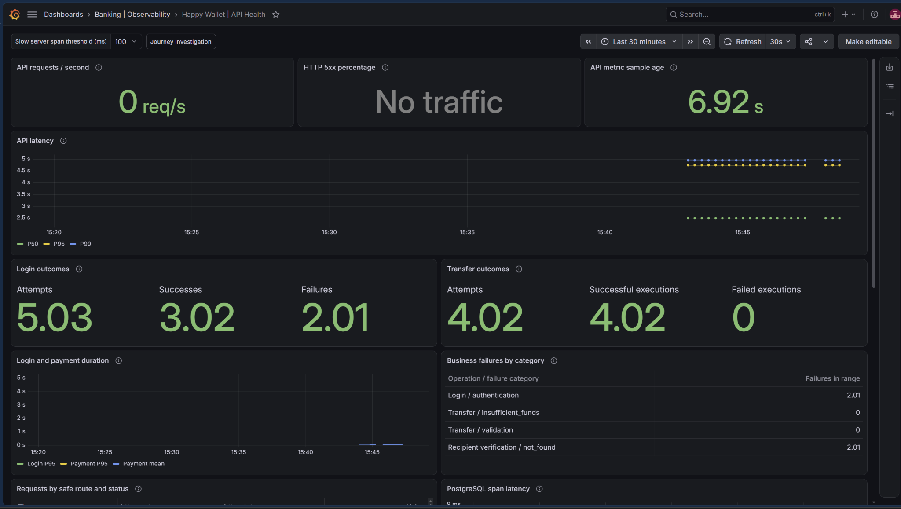
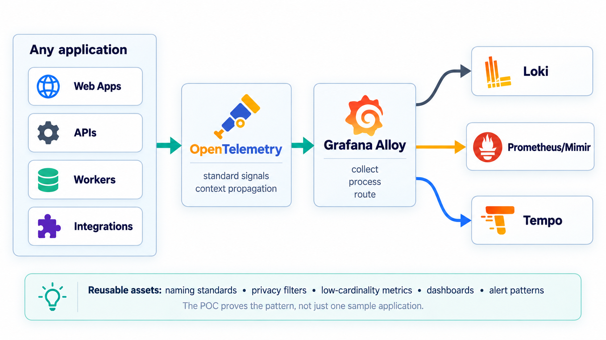

A leadership view of how observability connects customer experience, business outcomes, incident response, and engineering action.
Dhaval Mistry | Mahantai Journal


Provides continuity across authenticated browser activity without representing customer identity.
Connects a login or transfer journey across related operational records and requests.
Shows the technical execution path across browser, API, business spans, and database calls.


Executive OverviewOutcome and success view
Customer ExperienceJourney and frontend view
Journey InvestigationCorrelation and trace view
API HealthEngineering reliability viewIdentify customer or business degradation before it becomes a broad escalation.
Use the affected journey and correlation context to understand where failure appears.
Move directly to the service, API, or database behavior requiring engineering attention.
